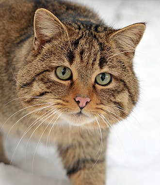
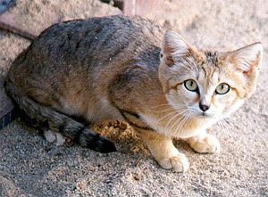

Кіт[1][2][3] (Felis) — рід хижих ссавців родини котових
(Felidae). У деяких старіших системах
класифікації
до
нього зараховували всіх представників малих кішок (Felinae), проте зараз безпосередньо до роду
відносяться
лише
кілька видів невеликих тварин, що мешкають у Євразії та Африці.
Найвідомішим представником цього роду є свійський кіт — підвид кота лісового.
За розміром найменшим представником роду є вид мураховий тигр довжина тіла і голови якого становить від
38
до
44 см. Найбільшим є кіт очеретяний із довжиною тіла і голови від 62 до 76 см[4]. Види котів (Felis)
мешкають
у
широкому різновиді природних середовищ, від болотяних до пустель, і харчуються здебільшого малими
мишоподібними, птахами й іншими дрібними тваринами.
Генетичні дослідження показують, що Кіт (Felis), Манул
(Otocolobus) і Азійський кіт (Prionailurus)
походять
від
Євразійського прародителя, що існував близько 6,2 мільйонів років тому, і що види Котів розділилися від
3,04
до
0.99 мільйонів років тому[5][6].

Кіт барханний
Кіт барханний[1][2] (Felis margarita) — невеликий ссавець родини котових (Felidae), поширений в Сахарі й
пустелях Середньої Азії та Північної Африки. У 2002 Міжнародний союз охорони природи надав барханному коту
статус близького до загрозливого через полювання на цей вид, проте у 2016 році він був прибраний[3].
Вперше барханного кота було описано в 1858 році Віктором Локом, що подорожував Сахарою, хоча існують більш
ранні данні від генерала Жана Огюста Маргерита в 1831 році.
Барханні коти живуть у піщаних та кам'янистих пустелях, які знаходяться далеко від водних ресурсів. Маючи
великі та міцні ноги, вони добре пристосовані до важких умов пустелі та різких перепадів температури.

Зовнішній вигляд
Кіт барханний відрізняється дрібними розмірами тіла: довжина його тіла 65–90 см, причому 40 % припадає на хвіст,
висота в загривку — 24–30 см; маса дорослих самців — 2,1–3,4 кг, самиці дрібніші. Голова велика і широка,
плеската, з бакенбардами. Вуха дуже великі й широкі, без китиць. Райдужна оболонка очей жовта, зіниця щілиновиді.
Лапи у барханної кішки короткі, сильні. Ступні покриває жорстка шерсть, яка захищає підошви лап від опіків гарячим
піском.
Хутро у барханної кішки густе і м'яке, оберігає тіло від низьких нічних температур. Забарвлення протекційне,
варіює від піщаного до світло-сірого. На спині й хвості є темніші сіро-коричневі смуги, які, проте, часто
зливаються із загальним тоном хутра. Малюнок на голові і ногах темніший і яскравіше виражений. Кінчик хвоста
чорнуватий або чорний. Груди і підборіддя дещо світліші. У Середній Азії взимку у барханної кішки з'являється
густіша зимова шубка тьмяно-піщаного кольору з сірим нальотом.
Азії взимку у барханної кішки з'являється густіша зимова шубка тьмяно-піщаного кольору з сірим нальотом.
Розповсюдження
Ареал барханної кішки має вид смуги, що починається в Сахарі (Алжир, Марокко, Чад, Нігер) і йде через Аравійський
півострів в Центральну Азію (Туркменістан, Узбекистан, Казахстан) і Пакистан.
Стиль життя
Барханна кішка мешкає виключно в спекотних, посушливих районах. Її місця проживання вельми різноманітні, від
піщаних пустель, практично позбавлених рослинності, до кам'янистих долин, зарослих чагарником. Зрідка вона
зустрічається в глинистій пустелі й на кам'янистих прибережних пасмах.
Барханні кішки ведуть суворо нічний спосіб життя. Тільки пакистанський підвид взимку і ранньою весною активний
головним чином у сутінках. Від денної спеки вони рятуються в притулках — в старих норах лисиць, корсаків, їжатців,
а також в розширених нірках ховрашків і піщанок. Іноді вони самостійно риють неглибокі нори або ямки, де ховаються
у разі небезпеки. Домашні ділянки самців і самиць займають в середньому 16 км² і часто перетинаються; у пошуках
їжі вони деколи проходять близько 8–10 км.
Барханні кішки м'ясоїдні; у їх раціон входить практично вся дичина, яку вони можуть відшукати. Його основу
складають піщанки, тушканчики, інші дрібні гризуни, ящірки, павуки і комахи. Іноді зайці-толаї й птахи, гнізда
яких розорюються. Барханна кішка також відома своїм полюванням на отруйних змій. Взимку вона іноді наближається до
селищ, але на домашніх кішок і птахів не нападає.
Значну частину вологи барханні кішки отримують з їжі і можуть довгий час обходитися без води.
Природні вороги барханних кішок — змії, великі хижі птахи і шакали.